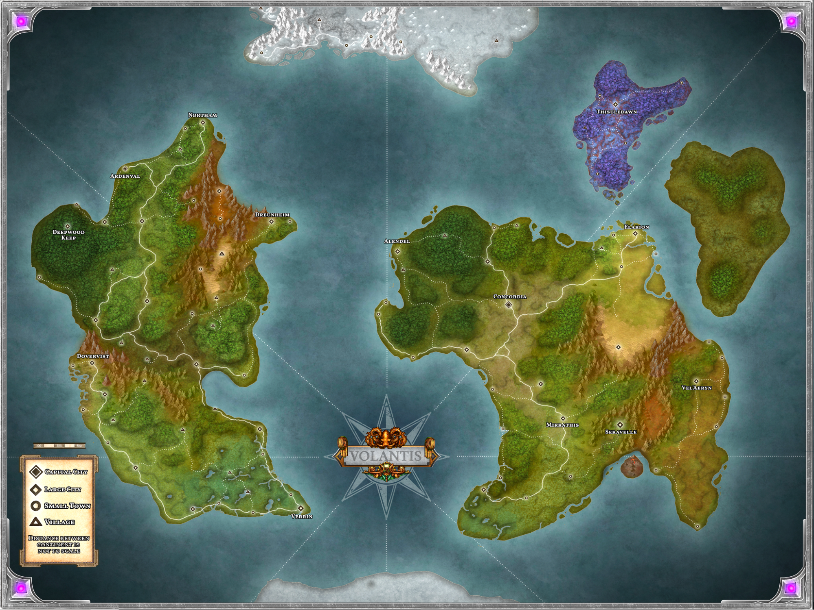
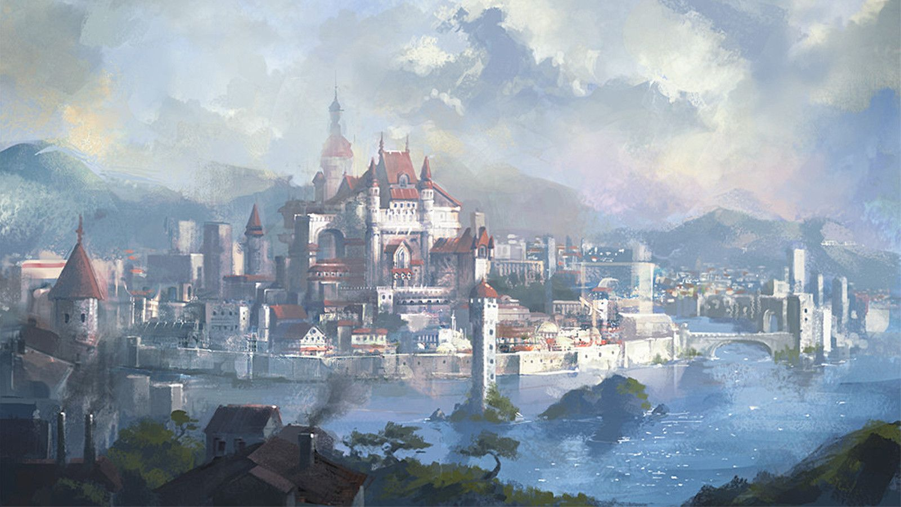
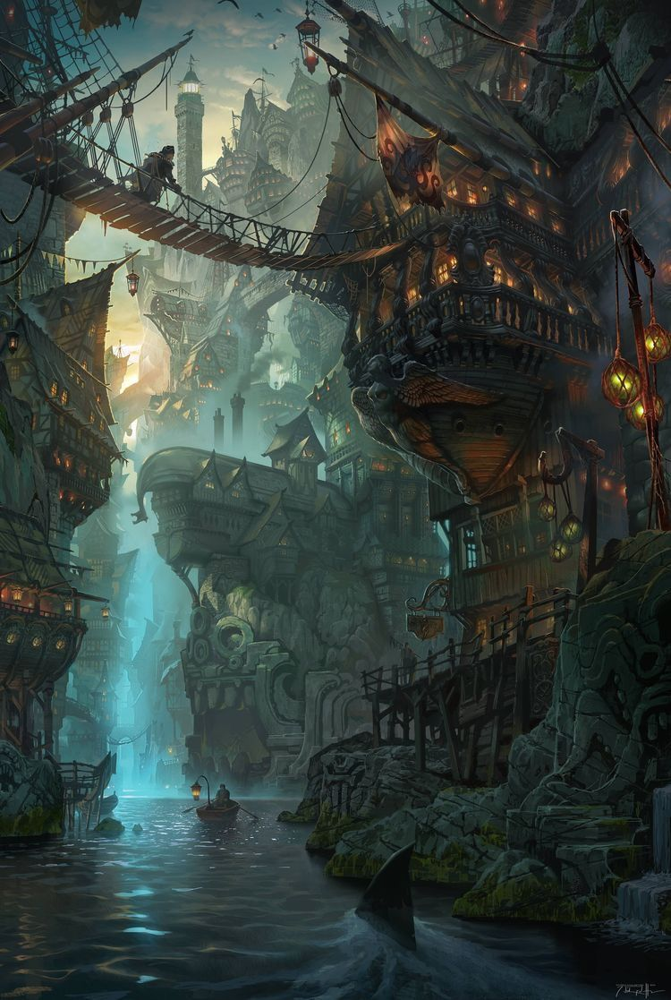
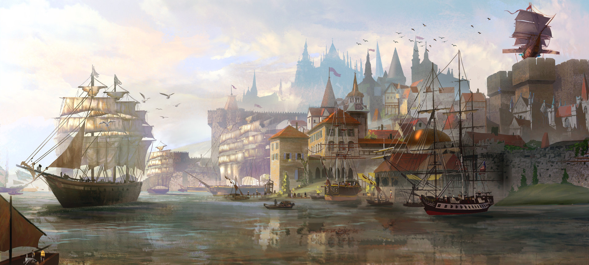
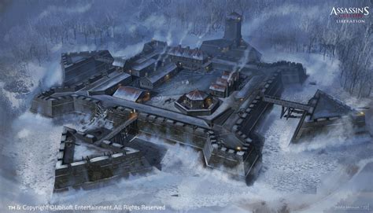
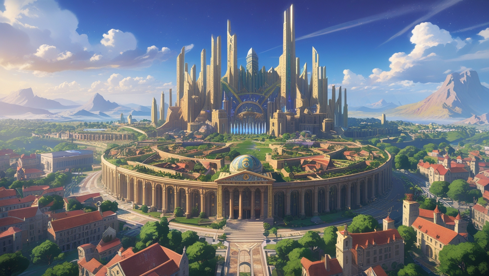
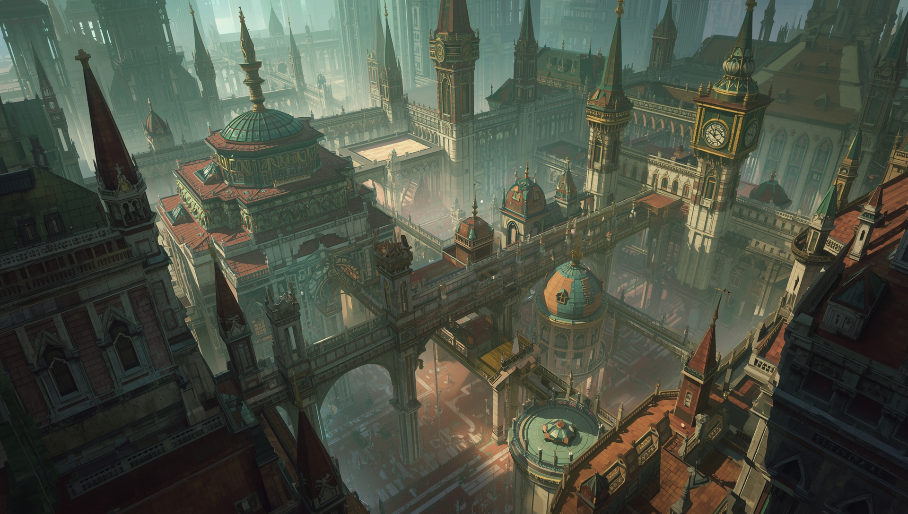
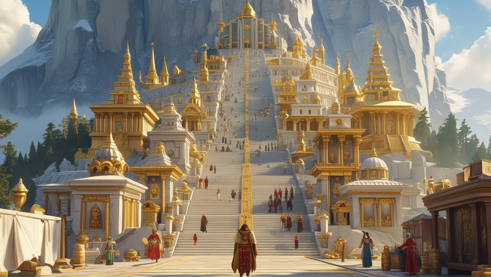
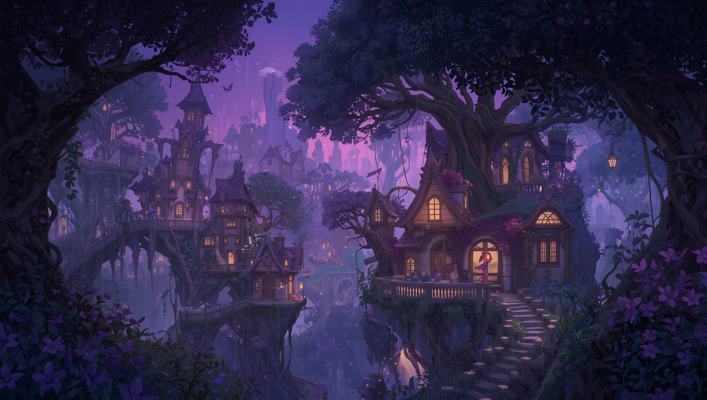
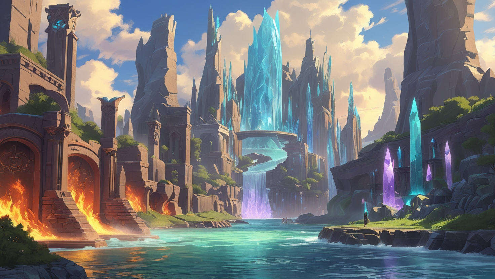

Volantis is een wereld die momenteel in vrede leeft, verdeeld over twee grote continenten, Oryndal en Aeloris, elk rijk aan zijn eigen unieke grondstoffen.Oryndal is technologisch vooruitstrevend, met de eerste stappen in elektriciteit (vooral voor verlichting), eenvoudige vuurwapens, stoommachines en vroege industrialisatie. Magie bestaat er wel, maar is zeldzaam en wordt vaak gewantrouwd.
Link naar origineel
Aeloris is rijk aan magie, met steden die door leylines worden aangedreven, betoverde bossen en goddelijke heiligdommen. Technologie is er overbodig door de overvloed aan magie.
Link naar origineel
Hun sterk verschillende culturen en ideologieën zorgen voor een ongemakkelijke verhouding. De continenten hebben nooit tegen elkaar gevochten, maar oorlog was heel gewoon in de geschiedenis van Oryndal, en dat heeft de technologische vooruitgang aangewakkerd.
De twee continenten weten pas sinds kort van elkaars bestaan. Communicatie en handel tussen de continenten zijn minimaal; de recente handel in nimbus steen (een mineraal dat de zwaartekracht tart) en vuurwapens is het eerste grote contact tussen de twee. Met nimbus steen kan Oryndal onder andere Exoskeleton Suits voor zwaar tilwerk en skyships ontwikkelen, terwijl vuurwapens Aelorianen zonder magie in staat stellen zich betrouwbaarder te verdedigen.
Skyships zijn extreem duur omdat ze veel nimbus steen nodig hebben, en zijn alleen in handen van de allerrijkste families of de grote bedrijven. De enige organisatie met een skyship die niet onwijs rijk is, is de adventurer’s guild. Het schip werd geschonken door Thylen Goldmane, hoofd van de familie Goldmane, om de guild te helpen haar taken uit te voeren.
Exoskeleton Suits zijn door nimbus aangedreven hulpstukken voor armen en benen die tilkracht leveren. Je ziet ze vooral in fabrieken, waar ze arbeiders helpen met zwaar tilwerk en het bedienen van zware machines.
Grote steden & cultuur
Oryndal:
Ardenval (Oryndal’s Metropolis)
Beschrijving

Link naar origineel
- Oorspronkelijk een enorme militaire vesting, inmiddels uitgegroeid tot een industriële metropool met miljoenen inwoners.
- Het meritocratische bestuur van de stad werkt vanuit de heringerichte vesting, nu een centrum voor overheid en bedrijfsleven. Later werd er een grote muur rond de stad gebouwd, voor het geval er ooit weer oorlog uitbreekt.
- De rijke elite woont in torenhoge spitsen bij de vesting, de middenklasse woont tussen de spitsen en de muur, en de armen wonen dicht op elkaar aan de rand van de stad.
Verrin (Port City/Trade Hub)
Beschrijving


Link naar origineel
- Een bruisende havenstad en handelsknooppunt, en de enige legale toegangspoort voor handel tussen Oryndal en Aeloris.
- De uitgestrekte kades staan vol pakhuizen, douanekantoren en tavernes voor zeelieden, handelaren en smokkelaars. De haven is voortdurend druk met zowel stoomschepen als magisch aangedreven schepen.
- De handelsrijkdom concentreert zich bij scheepvaartmagnaten die in villa’s op de kliffen boven de baai wonen, terwijl havenarbeiders opeengepakt zitten in de krappe, lawaaiige benedenwijken.
Dreunheim (Fortified Settlement)
Beschrijving

Link naar origineel
- Ooit een onneembare vesting die de noordgrens van Oryndal bewaakte, inmiddels uitgegroeid tot een enorme industriestad.
- De torenhoge stalen muren van de stad zijn versterkt met sporen van antimagische legeringen, een overblijfsel uit een tijd waarin magische belegeringswapens een bedreiging waren. Binnen leiden brede boulevards naar enorme gieterijen, militaire academies en wapenarsenalen.
- De militaire elite en wapenfabrikanten domineren de binnenstad, terwijl soldaten, ingenieurs en arbeiders de buitenwijken vullen.
Aeloris:
Concordia - The Unified Capital of Aeloris
Beschrijving

Link naar origineel
- Gebouwd in het hart van Aeloris: een enorme, stralende metropool waar elke school van magie en elk soort spellcaster in harmonie samenleeft.
- De uitgestrekte wijken mengen bouwstijlen en magische invloeden: marmeren tempels staan naast zwevende kristallen torens, levende tuinen slingeren door de kasseienstraten en betoverde waterwegen vervoeren gondels die door water elementals worden voortgestuwd. Op het centrale forum, de Circle of Unity, vergadert de High Conclave om geschillen te bemiddelen en het magische beleid van het continent te sturen.
- In Concordia wonen wizards, druids, clerics, bards, sorcerers, warlocks en meer zij aan zij, en hun gecombineerde kunsten vormen een stad waar magie elke ademtocht doordringt. De vrede wordt bewaard door wederzijds respect en oude pacten, maar door de enorme dichtheid aan magische kracht zijn wonderen en gevaren in Concordia nooit ver weg.
Vel’Aeryn – The Arcane Nexus
Beschrijving
Link naar origineel
- Gebouwd op een volmaakte zeshoek die gevormd wordt door kruisende leylines. De stad is verdeeld in zes wijken, elk gespecialiseerd in een eigen school van arcane magie.
- Grote torens en bibliotheken beheersen de skyline; hun architectuur verschuift subtiel mee met de magische discipline van de wijk. In het hart staat de Ley Spire, waar alle zes de energieën samenkomen in een voortdurend gezoem van kracht.
- Geleerden, leerlingen en magische ambachtslieden uit heel Aeloris stromen hierheen, waardoor de stad een centrum van magische innovatie en rivaliteit is.

Mirrathis – The City of Shifting Spires
Beschrijving

Link naar origineel
- Een metropool doordrenkt van illusie en betovering, waar zowel de architectuur als de inwoners subtiel en voortdurend veranderen.
- Hele wijken kunnen binnen een week onherkenbaar zijn, gevels rimpelen in verschuivende kleuren en het stratenplan verandert van de ene op de andere nacht.
- De stad bloeit op nieuwigheid, voorstellingen en vernieuwing, al hebben buitenstaanders vaak moeite om werkelijkheid van illusie te onderscheiden.
Seravelle – The Marble Mountain
Beschrijving

Link naar origineel
- Gelegen op een heilige berghelling: een stralende uitgestrektheid van gouden en marmeren tempels, schrijnen en altaren.
- De straten klimmen in terrassen naar de top, en er wordt gezegd dat elke trede je dichter bij het goddelijke brengt. Pelgrims uit het hele continent beklimmen de berg op zoek naar zegeningen of visioenen van de goden.
- High priests en tempelwachters wonen bij de bovenste heiligdommen, terwijl handelaren en gewone burgers op de lagere terrassen wonen.
Thistledawn – The Fey-Touched City
Beschrijving

Link naar origineel
- Genesteld in een schemerige vallei, waar de lucht altijd violet is en de gebouwen organisch groeien in plaats van gebouwd te worden.
- De bevolking stamt grotendeels van fey af, en wild magic surges treden zonder waarschuwing op: meestal onschuldig en grillig, maar soms verwoestend.
- Muziek, kattenkwaad en magie doordringen het dagelijks leven, maar voor buitenstaanders verloopt de tijd in Thistledawn onvoorspelbaar.
Elarion – The City of Elemental Harmony
Beschrijving

Link naar origineel
- Een zeldzame plek waar de oerelementen in volmaakt evenwicht naast elkaar bestaan, en waar elementals op natuurlijke wijze ontstaan zonder dat ze worden opgeroepen.
- De wijken van de stad zijn gevormd door hun dominante element: door vuur verlichte smidsen, stromende watertuinen, luchtige spitstorens en met kristallen beklede grotten.
- De leiders treden op als bemiddelaars tussen de elementaire facties en zorgen dat het evenwicht nooit verbroken wordt, uit angst voor rampzalige verschuivingen in de aard van de stad.
Volkeren
Oryndal is de thuisbasis van maar een klein aantal volkeren, waarvan mensen en dwergen het meest voorkomen. Andere volkeren zijn orks, goliaths, halflings, goblins en bugbears.
Link naar origineel
Aeloris kent veel meer volkeren dan Oryndal, zoals verschillende soorten fey in Thistledawn, Genasi uit Elarion, Aasimar uit Seravelle, en nog veel meer volkeren met een magische affiniteit verspreid over het continent. Daaronder vallen elfen, gnomes, firbolgs en veel dierlijke volkeren.
Link naar origineel
Magie in Oryndal
Link naar origineel
- Magie is zeldzaam en wordt met argwaan bekeken. De meeste magische voorwerpen zijn dure importproducten.
- Wizards zijn specialisten voor de elite, vaak ingehuurd voor onderzoek of beveiliging.
- Sorcerers zijn ongebruikelijk maar worden getolereerd, vooral als hun afkomst in Aeloris ligt.
- Warlocks worden veracht, omdat hun pacten wijzen op afhankelijkheid van bovennatuurlijke krachten in plaats van menselijk vernuft.
- Clerics en paladins bestaan, maar zijn minder gebruikelijk; sommigen dienen de god van leven en schepping, anderen de staat.
Magie in Aeloris
Link naar origineel
- Magie is verweven met het dagelijks leven. In de steden pulseren de straten van arcane energie, en hele bossen zijn betoverd. Het grootste deel van de bevolking kan op een of andere manier magie gebruiken. De sterkste magiegebruikers worden als leiders gezien.
- Leyline Convergences creëren gebieden met extreme magische kracht, die het weer, de tijd en de werkelijkheid zelf beïnvloeden.
- Magische bossen variëren van door fey aangeraakte open plekken tot spookbossen.
- Tempels voor de goden bloeien, en hele steden fungeren als goddelijke heiligdommen.
- Traditionele magiërs zien technologische vooruitgang als primitief of gevaarlijk.
Hoe de continenten elkaar zien
Oryndal ziet Aeloris als inefficiënt en te afhankelijk van magie. Velen geloven dat hun technologie magie uiteindelijk zal overtreffen.
Link naar origineel
Aeloris ziet Oryndal als grof en gevaarlijk. Sommigen voorspellen dat de snelle industrialisatie het einde van Oryndal zal betekenen.
Link naar origineel
Op warlocks wordt in Aeloris neergekeken, en in Oryndal worden ze volledig veracht.
De goden van Volantis
De goden van Volantis spelen een kosmisch spel van leven en dood, waarmee ze het evenwicht in de wereld bewaren. Stervelingen begrijpen hun ware aard vaak verkeerd.
Veylan, The Caretaker – God of Life and Beginnings
Kernidentiteit
Link naar origineel
- Domeinen: Nature, Life, Light, Peace, Community
- Symbool: Een bloeiende bloem omwonden met ranken, badend in zonlicht
- Alignment: Neutral Good
- Gezien als: Lawful Good
- Rol: Zorgt dat het leven bloeit en begeleidt groei en genezing.
- Volgelingen: De volgelingen van de Caretaker zijn mensen die om groei en genezing geven, zoals boeren, ouders en verpleegkundigen. Toegewijde volgelingen kunnen het leven bevorderen, gewonden genezen en bloeiende gemeenschappen stimuleren. Het meest vereerd in Oryndal.
Noctare, The Custodian – Goddess of Death and Endings
Kernidentiteit
Link naar origineel
- Domeinen: Death, Grave, Trickery, Twilight, War
- Symbool: Een zeis die door de nevel van de tijd snijdt
- Alignment: Lawful Neutral
- Gezien als: Lawful Evil
- Rol: Zorgt dat de dood op natuurlijke wijze komt, begeleidt zielen en voorkomt onnatuurlijke levensverlenging.
- Volgelingen: De volgelingen van de Custodian zijn mensen die de dood aanvaarden als deel van het leven, zoals lijkbezorgers en monniken, maar ook cultisten. Echt toegewijde monniken hongeren zichzelf soms uit om verlichting te bereiken, terwijl toegewijde cultisten tijd, verval en lot kunnen manipuleren om noodzakelijke eindes af te dwingen of stilstand te vernietigen. Openlijker vereerd in Aeloris.
Valthor, The Arbiter – Keeper of Balance
Kernidentiteit
Link naar origineel
- Domeinen: Forge, War, Tempest
- Symbool: Een weegschaal met aan de ene kant een bloeiende bloem en aan de andere kant een verwelkt blad
- Alignment: Lawful Neutral
- Gezien als: Chaotic Neutral
- Rol: Grijpt in om te voorkomen dat leven of dood te veel invloed krijgt. Kan plagen genezen of overbevolking uitdunnen.
- Volgelingen: Gericht op het bewaren van de cyclus van leven en dood. Deze godheid handhaaft de orde niet alleen met wijsheid of diplomatie, maar grijpt actief in wanneer het evenwicht verstoord raakt, vaak door conflict en schepping. Gevreesd en gerespecteerd op beide continenten.
Helion and Selene, The Twins – Diplomats of the Divine
Kernidentiteit
Link naar origineel
- Domeinen: Order, Knowledge, Arcana, Peace
- Symbool: Een cirkel in twee helften gesplitst, de ene met een rank en een bloem, de andere met een verdorde tak en een vallend blad
- Alignment: True Neutral
- Gezien als: Lawful Neutral
- Rol: Bemiddelen in geschillen tussen goden en stervelingen, en bevorderen evenwicht via diplomatie in plaats van geweld.
- Volgelingen: Volgelingen proberen het evenwicht tussen leven en dood te begrijpen. Ze werken als hoeders van de kosmische orde en zorgen dat schepping en vernietiging in evenwicht blijven. Hun tempels zijn vaak bibliotheken en archieven.
Karakterconcepten
Uit Oryndal (een op technologie gerichte samenleving)
- The Exiled Warlock – Een inwoner van Oryndal die een pact sloot en nu wordt opgejaagd of gemeden.
- The Scientist-Turned-Wizard – Een geniale student, in de leer bij een buitenlandse wizard, die magie en technologie in balans probeert te houden.
- The Skyship Pilot – Een kapitein of bemanningslid die laveert tussen de spanningen tussen Oryndal en Aeloris.
- The Corporate Spy – Naar Aeloris gestuurd om magische geheimen te leren, maar begint aan de eigen missie te twijfelen.
- The Mechanized Knight – Een krijger in een exosuit op nimbus-kracht, die magie combineert met het vernuft van Oryndal.
Uit Aeloris (een door magie gedomineerde samenleving)
- The First Artificer – Een pionier die magie en technologie combineert en op verzet stuit van traditionele magiërs.
- The Magicless – Geboren in een magische familie maar zelf zonder magie, vechtend voor erkenning.
- The Divine Heretic – Een cleric die de invloed van de goden in twijfel trekt, gezien als profeet of godslasteraar.
- The Anomaly Survivor – Iemand die veranderd is door blootstelling aan instabiele magische energie.
Tussen twee werelden
- The Nimbus Smuggler – Een rogue of handelaar die illegaal tussen de continenten handelt.
- The Hybrid Scholar – Een onderzoeker die wil bewijzen dat magie en technologie kunnen en moeten samengaan.
- The Exiled Mage – Een inwoner van Aeloris die verstoten werd voor het breken van magische wetten en nu probeert te overleven in Oryndal.
- The Riftwalker – Een personage dat per ongeluk tussen de continenten reisde en nu vastzit in een onbekende wereld.